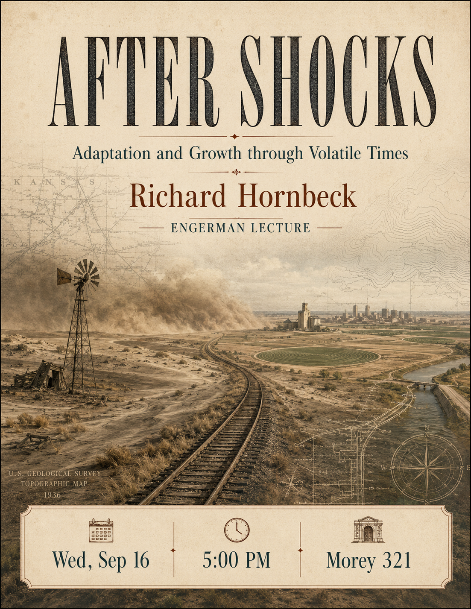

Read this first
We jump right into class materials on Day One. We will not spend class time going over the syllabus or doing introductions. The first few weeks are about fanning away the miasma of economics apprehension and giving you a full-blooded introduction to the EWOT.
The syllabus and all class materials are on Blackboard. Please read the syllabus and related course descriptions carefully. Before sending admin-related emails that are covered by the syllabus, ask a classmate first, a TA second, and the Head TA third.
Or do not read the syllabus and use the course interface instead: Econ 108 Syllabus GPT.
Quick hits
Topics and readings this week
Begin working through the readings in Section One. There is no particular order, and none of these is required in the traditional sense. If you only read a little bit, focus on I, Pencil. The Engerman paper is a nice historical examination of what you are about to get yourselves into, and the short Otteson chapter is a very good attempt to define terms that are ill-tossed around.
Our lectures do not track the readings and vice versa, but the readings are not there for no reason. See “Readings, Videos and Reserves” for the class reading list. Some professional journal links require library login, Rochester VPN, or campus network access.
Or do not read anything at all and use the EWOT UNReading List. This is much more than a reading tool; it is a course and ideas synthesis tool.
Admin, recitation, assignments, and exams
Important dates
Mark down all important class dates immediately. Assignment due dates are on Blackboard and in the syllabus. You will have assignments due every Sunday of the semester, and exam dates are set in stone.
Recitation
If you have not already done so, register for a weekly recitation. The sections are capped at 24, and you may not attend a recitation other than the one you registered for. The first recitation sections begin Wednesday, September 2. Please watch for a welcome email and additional information from your recitation TA.
What do I bring to recitation? Sticks, eyes, feet and brains.
Week One assignments
Your first course assignments are posted on Blackboard under “Weekly Updates and Assignments 2026.” Before doing them, read the Week Zero Reflection and the grading document for research and rumination work.
Both your research and rumination assignments are due Sunday night, September 6, before 6:59pm. There are no word limits or word specifications. Spend the time early and often to engage with the questions and talk about them with your peers.
Submit assignments on Blackboard under “Weekly Updates and Assignments 2026,” then “Week One Class Update and Assignment,” and then click each particular assignment to access the submission box.
Exemptions
- All assignments must be completed unless covered by an exemption.
- All students have a no-questions-asked 3 exemptions policy.
- You may use 0, 1, 2, or 3 exemptions over the term.
- If you are late, traveling, sick, dealing with personal trouble, unable to dedicate your best effort, or otherwise unable to complete the work, you must take an exemption.
- There are no extensions, no late work, and no make-ups. The exemption policy is the pressure release valve.
- If you need an exemption, leave the submission blank. We will enter a zero for that week of work.
Exams
Please make note of the exam dates and times. The exams are held outside class time. The first exam is Friday, October 2 at 2pm. Yes, “it is on the test,” and be prepared to explain your thinking in clear, concise writing.
Office hours, TA communication, and access
Look for an announcement from Head TA Katherine Watai. Katherine and I communicate regularly about every aspect of the course, and she is privy to my intentions for the class. Unless you hear something directly from me or Katherine, remain skeptical.
Alexa Pishtey is our assistant instructor for the course. She has taken the course, TA’d for it, and served as Head TA. Her role is to ensure consistent communication across course staff and activities, develop sustainable learning tools, develop training tools for future staff, and advise me on pedagogy.
I am available by phone, text, or email during the week, but I am moving toward not being on or near electronics over the weekend. If you have needs or questions over the weekend, run them through the TAs.
For the most up-to-date office hours information, campus whereabouts, and other ways to meet or get in touch, use tiny.cc/RizzoHours. We walk to the picnic tables after the 10:25 class gets out; people tend to drop in for anywhere from 2 to 75 minutes.
Free access to the New York Times and Wall Street Journal
- For the NYT, use nytimesineducation.com/access-nyt, enter “University of Rochester,” and use your rochester.edu email address.
- For the WSJ, use WSJ.COM/ROCHESTER, enter your university credentials, and create your account.
Upcoming special events
Department of Economics Engerman Lecture
Title: “After Shocks: Adaptation and Growth through Volatile Times”
Who: Rick Hornbeck of the University of Chicago
When: Wednesday, September 16 at 5:00pm
Where: Morey 321
Professor Hornbeck is the V. Duane Rath Professor of Economics at the University of Chicago Booth School of Business. He is a leading applied microeconomist and economic historian whose research explores the historical development of the American economy.
{kind=link}

Politics and Markets Project
Host: Professor David Primo
Title: Topic TBD, moderated panel discussion
Date: Wednesday, November 4
Time: 7:30pm to 8:30pm
Location: Wegmans Hall 1400
More info: Follow the PMP on Instagram.
Department of Economics Special Guest Lecture
Title: Human Capital for Humans, with moderation by U of R Economics undergraduate Isaac Miller
Who: Pablo Peña of the University of Chicago
Date: Thursday, October 8
Time/location: TBD
Why do people marry, have kids, invest in health, or choose a career? Economics has an answer, and it is not “supply and demand.” It is human capital theory, the framework Gary Becker built and applied to every domain of human life.
Supply and Demand Mechanics Lab
Look for an announcement from the TA staff. Details TBD.
Some items that caught our attention
- Wanna get an A? Try this. And try this too.
- Minimum wages are not magic wands: new evidence reports adverse effects on employment, hours, and earnings for initially-employed low-wage workers in poor and low-income families.
- Ban data centers and blow up the economy: data center bans may choke off a major engine of US growth, jobs, and retirement wealth.
- Do you need to be a billionaire to live your dreams? Often the bottleneck is not money but confidence, imagination, willingness to take risk, and discipline.
- Sports betting as investing: apparently not the new blue-chip portfolio strategy.
- Legal plunder, Gavin Newsom, and poop diapers: when a moralized public program becomes no-bid, no-shop cronyism at absurd per-unit cost.
- Not on your bingo card: within a socioeconomically vulnerable population, Black adults outlive Whites.
- Someone else should pay, I guess: support for climate fees collapses as even tiny monthly costs become explicit.
- The gals are superior, jigsaw puzzle edition: a mixed-gender contest where women usually win.
- In China, the smarter you are, the less entrepreneurial you are.
- Are robots and asteroid mining overrated?
- Against brokenist economics: a critique of economic programs across MAGA right, socialist left, and woke left.
- JEP symposium on tariff economics.
- Are we leaving the labor force or not? A revisionist take on labor force participation.
- The free-market success of Japanese rail: private networks, liberal land use, and real-estate economics.
- The end of universities: higher education may remain recognizable, expensive, irritating, and central to jobs, mating, and status.
Chart of the week
American kids are not allowed to go very many places without being accompanied by an adult. By age 14, a majority of American kids are not allowed to travel beyond their own street. Even at age 17, more than 60% cannot go beyond their own neighborhoods.
Photo of the week
Switzerland’s official topographic maps have been hiding secret drawings for decades: a duck, a fish, a hiker, even a marmot. Cartographers slipped these tiny illustrations into the maps right before retiring.
Video/documentary/book/cartoon of the week
What has happened to the freedom our kids used to enjoy? And what does that mean for what happens here at college and beyond?
The meaning of an education
You cannot get educated by this self-propagating system in which people study to pass exams, and teach others to pass exams, but nobody knows anything. You learn something by doing it yourself, by asking questions, by thinking, and by experimenting.
- Richard Feynman